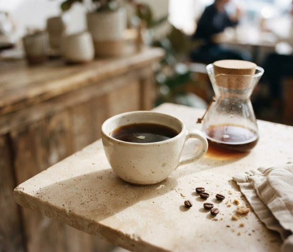
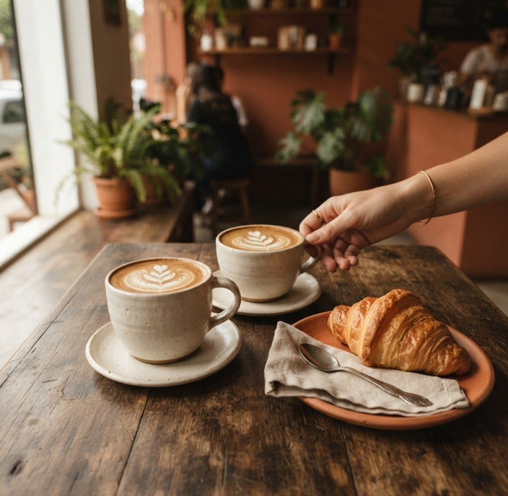
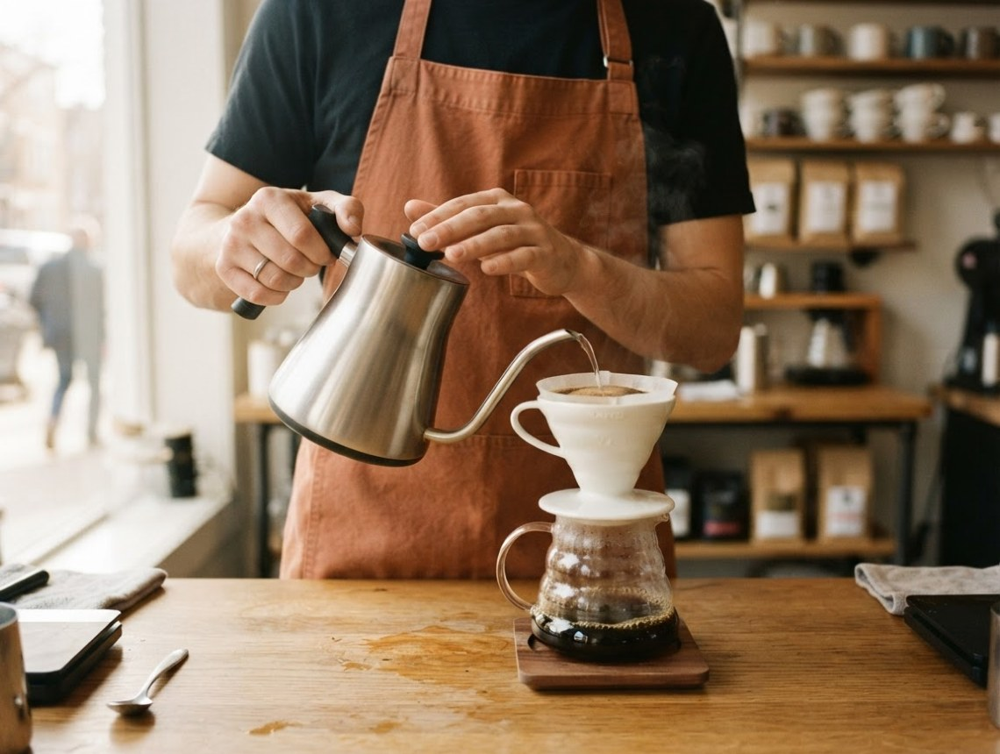
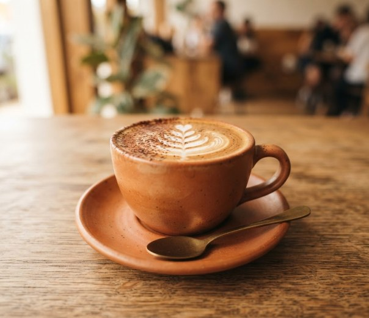
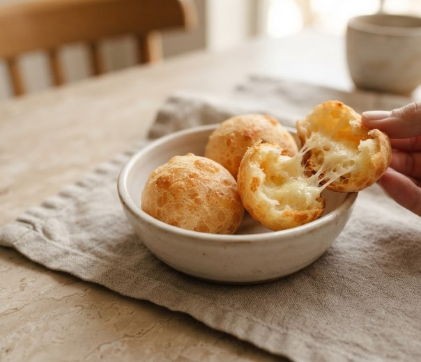
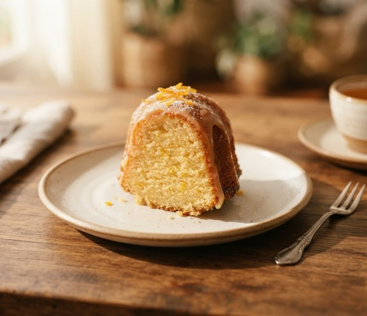
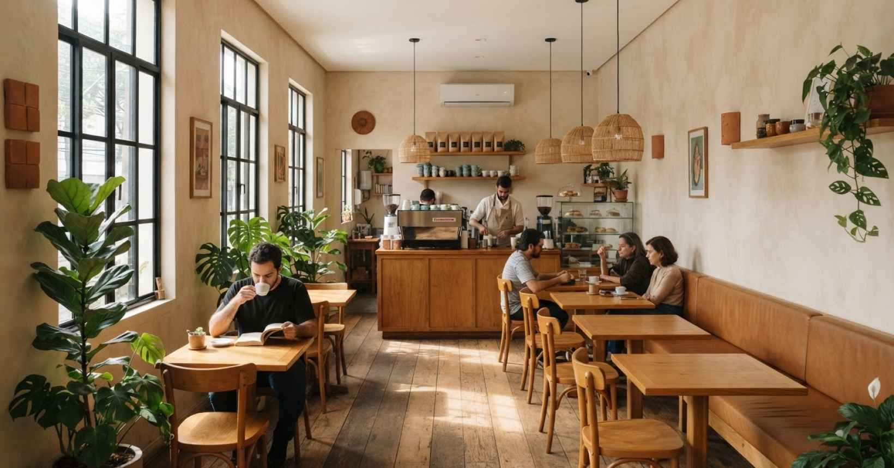
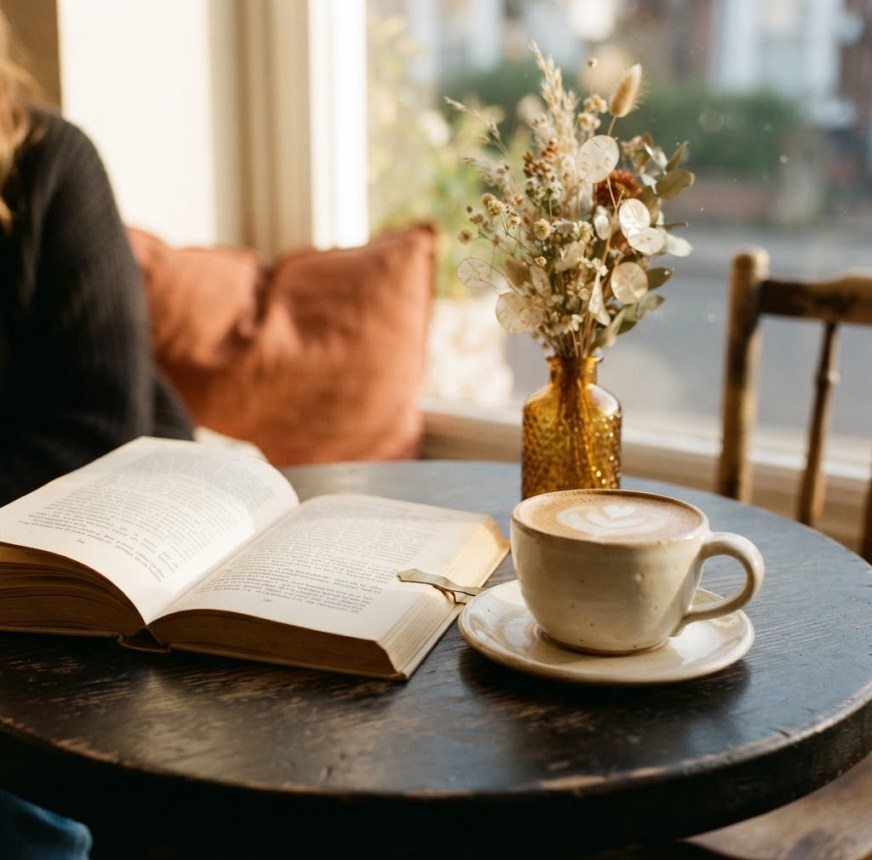
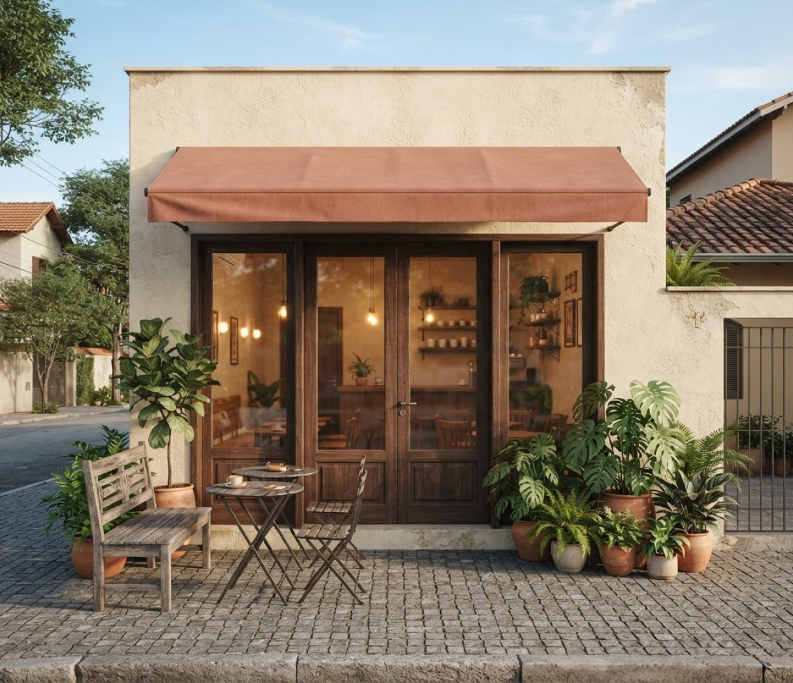

Cafés de origem
Coado da casa
R$ 12,00
Grão da estação, preparo no V60 e notas que surpreendem. 200 ml.
Café especial. Tempo de qualidade.
Cafés de origem, receitas feitas à mão e um cantinho para desacelerar. Na Aurora, o melhor do dia começa com uma pausa.


Prazer, somos a Aurora
A Aurora nasceu de uma ideia simples: criar um lugar onde uma boa xícara de café pudesse transformar o ritmo do dia. Um encontro entre o sabor, o cuidado e a vontade de ficar mais um pouco.
Por aqui, escolhemos grãos de pequenos produtores brasileiros e preparamos nossas receitas em pequenas fornadas. Tudo para que você se sinta em casa, mesmo fora dela.
“Café bom aproxima.”
É assim que a nossa história começa, todos os dias.
Feito aqui, pra você.

Cafés de origem
R$ 12,00
Grão da estação, preparo no V60 e notas que surpreendem. 200 ml.

O queridinho da casa
R$ 16,00
Espresso duplo, leite cremoso e um toque delicado de cacau. 180 ml.

Saindo do forno
R$ 9,00
Casquinha dourada, miolo macio e queijo de verdade. 3 unidades.

Receita de afeto
R$ 16,00
Fatia generosa, massa fofinha e calda de laranja feita na hora.
Nosso jeito de fazer
Grãos de pequenos produtores brasileiros, escolhidos com cuidado e torrados para revelar o melhor de cada safra.
Receitas simples, bons ingredientes e preparo artesanal. O frescor de pequenas fornadas ao longo do dia.
Atendimento próximo, uma mesa para chamar de sua e o convite para aproveitar as coisas sem pressa.


Quem chega, se sente em casa
“O coado é uma delícia, mas o que me faz voltar é a sensação de estar em casa. Meu respiro no meio da semana.”
“Cappuccino cremoso, bolo ainda morninho e uma conversa boa. É o tipo de lugar que melhora qualquer manhã.”
“Fui para tomar um café e acabei ficando a tarde inteira com um livro. A Aurora tem esse efeito na gente.”
Depoimentos e personagens fictícios criados para este projeto demonstrativo.
Te esperamos por aqui
Rua do Amanhecer, 128 • Vila Aurora
São Paulo – SP • Endereço fictício
Não precisa de ocasião. Nem de pressa.
Localização e horários ilustrativos. A Aurora não é uma loja real.

Um café. Mil possibilidades.
Venha pelo café. Fique pelo aconchego. A Aurora espera por você.